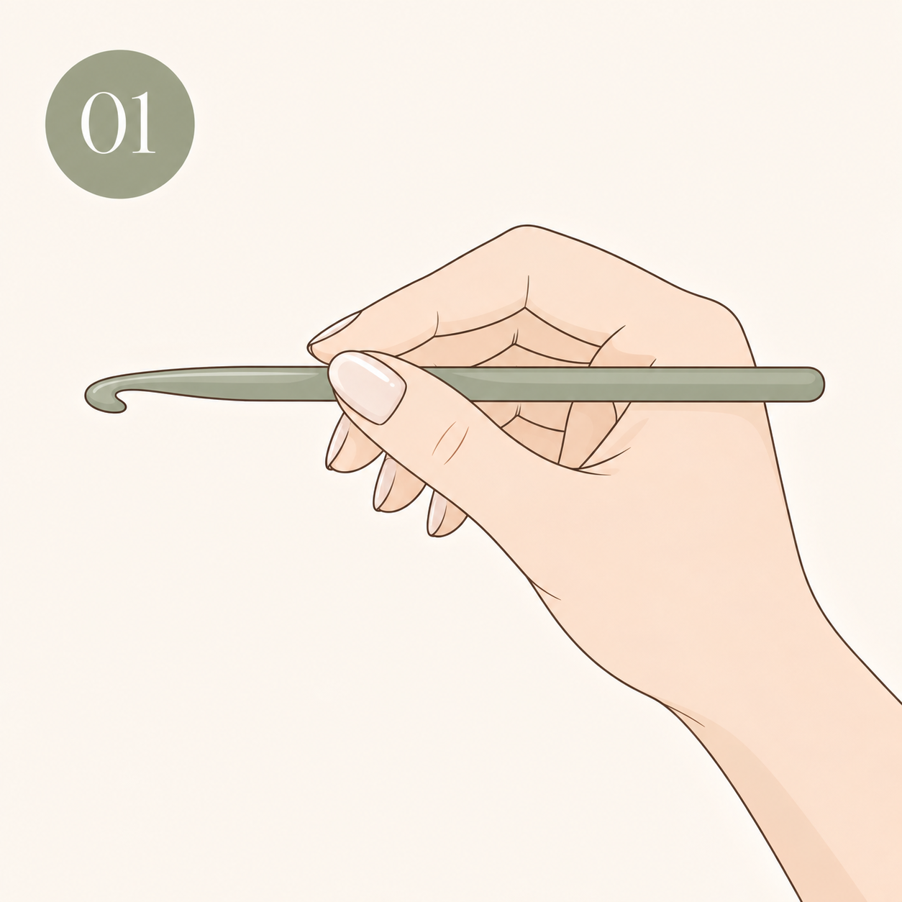

Everything you need to know before you start your first project – materials, how to hold hook and yarn, and the most important stitches explained simply.
Crochet is one of the most relaxing crafts there is – all you need is a hook, some yarn and a little patience. At first the stitch structure might look confusing, but with a few basic stitches and some practice, your first small project will come together in no time.
This page guides you step by step: from the right supplies and how to hold hook and yarn to the four most important stitches that appear in almost every pattern.
Note: On this site we use US crochet terms (e.g. sc = single crochet, dc = double crochet).
For beginners, a medium size such as 4–5 mm works well with easy-to-handle yarn.
Smooth, light-colored cotton or acrylic yarn is easier to see at first than fluffy yarn.
A small, sharp pair of scissors to cut the yarn cleanly.
Handy for checking your gauge or project size.
Help you mark the start of a round or important spots in the pattern.
A blunt needle with a large eye for weaving in the ends at the finish.
Hold the crochet hook like a pencil between your thumb and index finger, or grip it like a knife – try out what feels more relaxed for you.

Drape the yarn over the fingers of your other hand so you can create even tension. Too loose and the yarn slips, too tight and it slows you down.
Sit comfortably with your arms loosely bent. Tense hands are the most common reason beginners get frustrated and give up.
Before starting your first real project, crochet a few rows just for practice – without worrying about the result.
Almost every crochet pattern starts with a foundation chain. It sets the width of your project and is the base you'll work your first row into.
Wrap the yarn crosswise around your left index and middle fingers to form a loop. Slide the hook under the back strand of this loop and pull it through – this creates a small knot that you then gently tighten on the hook.
Wrap the working yarn over the hook once from back to front – this is called a yarn over.
Pull the yarn over through the loop already on your hook. That's your first chain stitch.
Repeat yarn over and pull through until your chain is as long as the pattern says.
Count to check: every little V shape in the chain is one chain stitch – the loop on your hook doesn't count.
Tip: Crochet the foundation chain a little more loosely than the rest of your project – it makes it easier to insert your hook into the stitches in the first row.
The base of almost every pattern – this is how you start your foundation chain.
The densest and sturdiest basic stitch – ideal for amigurumi.
A bit looser than single crochet and grows taller faster.
Airier and taller – perfect for blankets, scarves and shawls.
Once the foundation chain is done, you work row by row across it. The key point is turning – and the turning chains that make sure the new row gets the right height.
Seen from above, every stitch forms a small “V”. Normally you insert your hook under both legs of this V – that keeps the fabric closed and even.
Crochet into the very last stitch of the previous row. This is where a stitch gets forgotten most often – and your work then gets narrower row by row.
Before you turn, you need height for the next row: ch 1 for single crochet, ch 2 for half double crochet, ch 3 for double crochet. Depending on the stitch, they replace the first stitch of the new row.
Turn your work like the page of a book – always in the same direction. This keeps the edges even and helps you keep track of which side is facing you.
Count the stitches at the end of every row. If the number stays the same, your edges are straight. If it goes up or down, it's almost always the first or last stitch.
The most stubborn beginner mistake: accidentally working into the turning chain or skipping it at the end. Crochet your first practice pieces in single crochet – there the turning chain is just one stitch and matters less.
Not everything is worked in rows. Bags, hats, baskets and all amigurumi are made in rounds – either in a spiral or in joined rounds.
The start of almost all work in the round: a yarn loop you crochet the first round into and then pull tight – so there's no hole in the middle.
You keep crocheting continuously without joining the rounds. Typical for amigurumi, because there's no visible seam.
Each round is closed with a slip stitch and started again with chains. This creates a visible seam but clean pattern transitions.
Targeted increases and decreases create round and three-dimensional shapes – from a flat coaster to an amigurumi head.
Rule of thumb for flat circles: in every round, add as many increases as you had stitches in the first round. So with 6 stitches at the start, 6 increases per round – and your circle stays flat.
The gauge swatch is the most boring and at the same time most important step of any pattern. It decides whether your project ends up the stated size – because everyone crochets with a different tension.
Crochet a square of about 15 × 15 cm in the stitch the pattern calls for – with the yarn and hook you want to use for the project.
Lay the piece flat without stretching it. Mark a 10 × 10 cm area and count the stitches across and the rows up within it.
If you have more stitches than stated, you're crocheting too tightly – use a larger hook. If you have fewer, you're crocheting too loosely – use a smaller one.
Note which hook size worked with which yarn. After a few projects you'll have your own personal table and can skip many swatches.
For amigurumi you can usually skip the gauge swatch – the exact size doesn't matter there, only that the stitches are dense enough so the stuffing doesn't show through.
Many patterns show the design not only as text but also as a chart made of symbols. Once you know the most important symbols, you can see at a glance how a pattern is built.
A small circle or oval. They usually form the bottom row of a chart – the foundation chain.
A cross or an X. Depending on the source, also shown as a small “t” without a crossbar.
A vertical line with a crossbar on top. The more crossbars, the taller the stitch.
A vertical line with a diagonal slash in the middle. Two slashes mean treble crochet.
Charts are read from bottom to top. In rows, the reading direction changes with every row: odd rows from right to left, even rows from left to right. In rounds, you read from the center outwards. You can try it out right away in the Pattern Generator.
Almost every difficulty at the start comes down to a handful of causes. Here are the most common ones – and what helps with each.
Cause: The last stitch of each row gets missed. Solution: Count after every row and deliberately look for the very last stitch – it often hides right next to the turning chain.
Cause: You're also working into the turning chain. Solution: With single crochet, the turning chain doesn't count as a stitch – don't work into it.
Cause: Too many increases. Solution: Add a round without increases or reduce the number per round.
Cause: Too few increases. Solution: Add increases – although for amigurumi, exactly this curve is intended.
Cause: Changing yarn tension, often due to breaks. Solution: This improves with practice on its own. Crocheting larger sections in one go also helps.
Cause: Gripping too tightly, usually with yarn that's too thin. Solution: Take breaks, try an ergonomic hook and practice with thicker yarn.
If you can check off these six points, you're ready for your first real project.
You can crochet a chain of the desired length and count the stitches in it.
Single crochet and double crochet come easily without looking them up.
Your practice square keeps the same stitch count over several rows.
You can close a magic ring and work the first round into it.
You know how to double a stitch and work two stitches together.
You can hide yarn ends invisibly in the fabric with the tapestry needle.
Your first stitches will rarely be perfectly even – that's completely normal and improves over time.
Start with a practice square or a small amigurumi figure instead of jumping straight into a big blanket.
Read a pattern all the way through once before you start crocheting – that way you'll understand its structure better.